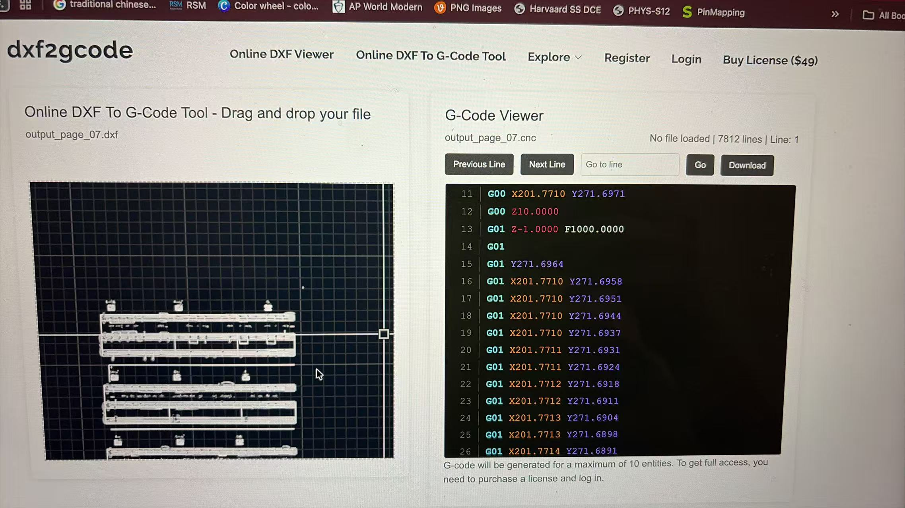

Music Score Plotter Documentation
This plotting machine is built to automatically draw hand‑styled musical staff and musical notes on paper. It can visualize digital sheet music into physical artwork.
System Workflow & Implementation
We use the online conversion tool dxf2gcode to process files. First, the sheet music graphic is exported as a DXF vector file. The DXF file is imported into dxf2gcode, which converts the vector graphics into standard G‑code motion commands.

Demo Video: https://www.bilibili.com/video/BV1TtGK6aEbx/?spm_id_from=333.1387.homepage.video_card.click
The Xiao ESP32C3 microcontroller hosts a built‑in web control website. Users paste the generated G‑code into the webpage and send the data to the microcontroller.
The onboard program on Xiao ESP32C3 parses each G‑code instruction. It drives the stepper motor system to move the drawing pen, tracing staff lines and musical notes on paper to recreate the complete sheet music.
Sample G‑code File
Download our test G‑code example circles_staff.gcode below. After downloading, open the file, copy all content, and paste into the plotter web interface for testing.